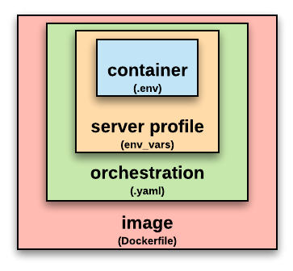
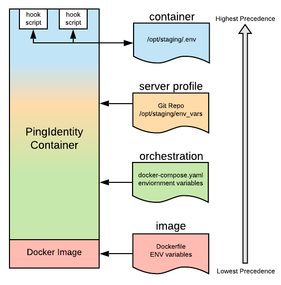

Variables and Scope ¶
DevOps variables provide a way to store and reuse values with our Docker containers, ultimately used by our Docker Image hooks to customize configurations.
It's important to understand the different levels at which variables can be set and how and where you should use them. The following diagram shows the different scopes in which variables can be set and applied:

Assume that you're looking down at this diagram as a pyramid, where the container is the top. The order of precedence for variables is top down. Generally, you'll set variables having an orchestration scope.
Image Scope ¶
Variables having an image scope are assigned using the values set for the Docker Image (for example, from Dockerfiles). These variables are often set as defaults, allowing scopes with a higher level of precedence to override them.
To see the default environment variables available with any Docker image, you can enter:
docker run pingidentity/<product-image>:<tag> env | sort
Where <product-image> is the name of one of our products, and \edge).
See our Docker Images Reference for the environment variables available or each product, as well as those available for all products (PingBase).
Orchestration Scope ¶
Variables having orchestration scope are assigned at the orchestration layer. Typically, these are environment variables set using Docker commands, or Docker Compose or Kubernetes YAML configuration files. For example:
- Using docker run with --env:
docker run --env SCOPE=env \
pingidentity/pingdirectory:edge env | sort
- Using docker run with --env-file:
echo "SCOPE=env-file" > /tmp/scope.properties
docker run --env-file /tmp/scope.properties \
pingidentity/pingdirectory:edge env | sort
- Using Docker Compose (docker-compose.yaml):
environment:
- SCOPE=compose
env_file:
- /tmp/scope.properties
- Using Kubernetes (kustomize.yaml)
env:
- name: SCOPE
value: kubernetes
- Using Kubernetes configMapRef and secretRef (kustomize.yaml)
- envFrom:
- configMapRef:
name: kubernetes-variables
- secretRef:
name: kubernetes-secret
Server Profile Scope ¶
Variables having server profile scope are supplied using property files in the server-profile repo. You need to be careful setting variables in this scope as the settings can override variables having an image or orchestration scope.
The following masthead can be used in your env_vars files to provide examples of setting variables and how they might override variables having a scope with a lower level of precedence. It will also suppress a warning when processing the env_vars file:
# .suppress-container-warning
#
# NOTICE: Settings in this file will override values set at the
# image or orchestration layers of the container. Examples
# include variables that are specific to this server profile.
#
# Options include:
#
# ALWAYS OVERRIDE the value in the container
# NAME=VAL
#
# SET TO DEFAULT VALUE if not already set
# export NAME=${NAME:=myDefaultValue} # Sets to string of "myDefaultValue"
# export NAME=${NAME:-OTHER_VAR} # Sets ot value of OTHER_VAR variable
#
Container Scope ¶
Variables having a container scope are assigned in the hook scripts, and will overwrite variables that are set elsewhere. Variables that need to be passed to other hook scripts be appended to the file assigned to ${CONTAINER_ENV}, (defaults to /opt/staging/.env). This file will be sourced for every hook script.
Scoping Example ¶
